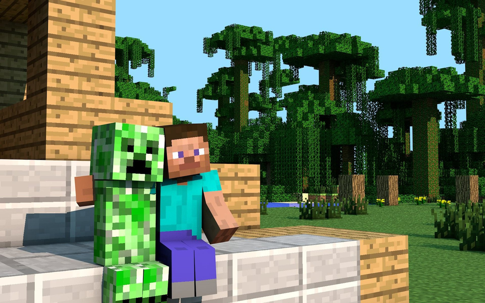
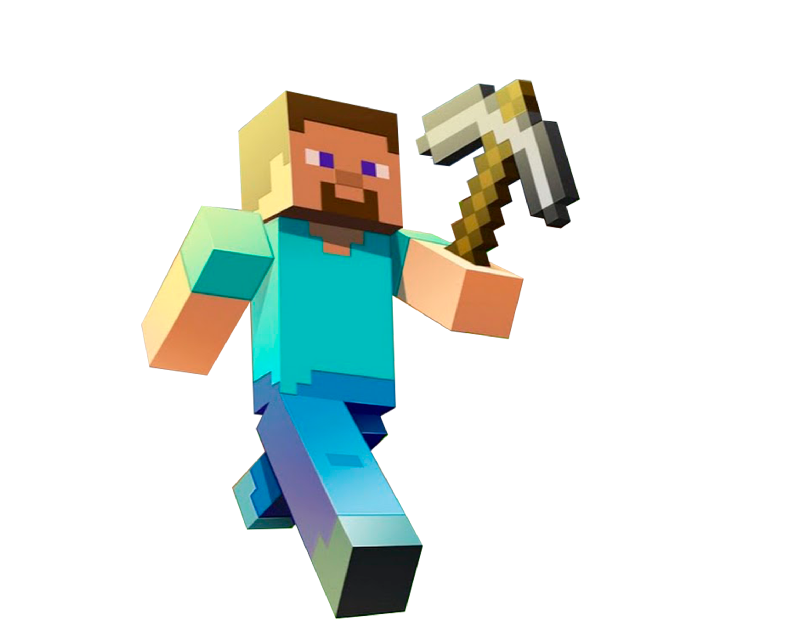
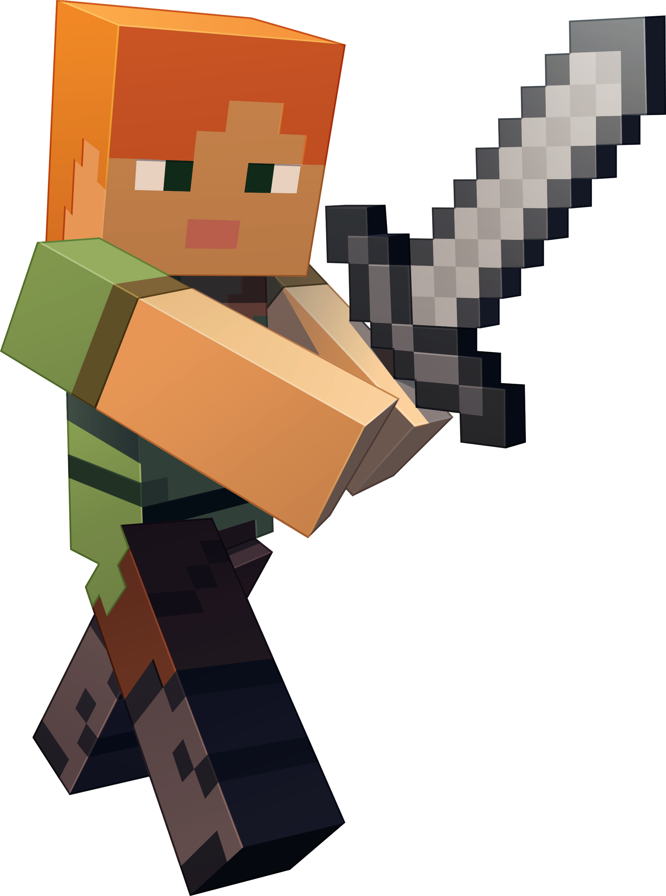

Minecraft
Компьютерная инди-игра в жанре песочницы, созданная шведским программистом Маркусом Перссоном и выпущенная его компанией Mojang AB.
Перссон опубликовал начальную версию игры в 2009 году; в конце 2011 года была выпущена стабильная версия для ПК Microsoft Windows, распространявшаяся через официальный сайт.
В последующие годы Minecraft была портирована на Linux и macOS для персональных компьютеров; на Android, iOS и Windows Phone для мобильных устройств; на игровые приставки PlayStation 4, Vita, VR, Xbox One, Nintendo 3DS, Switch и Wii U.
В 2014 году корпорация Microsoft приобрела права на Minecraft вместе с компанией Mojang AB за 2,5 миллиарда $.
Студия 4J портировала игру на игровые приставки, а Xbox Game Studios разработала мультиплатформенную версию Minecraft и специальное издание игры для образовательных учреждений